Manual d'Usuari
En aquesta guia t'explico pas a pas com funciona i com pots treure profit de l'aplicació que he desenvolupat per al Projecte Hospital.
1. Inici i Login
El cor del programa és el fitxer main.py. És el primer que hem d'executar, ja que
s'encarrega de gestionar el menú principal i coordinar tota la resta de funcions.
De primeres hem d'executar el programa i ens surt aquest menú d'inici de sessió:
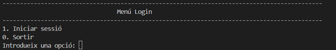
Aquest sistema inicia sessió al programa amb codificació. Depenent de l'usuari amb el qual iniciem sessió, tindrà els seus propis rols i permisos a la base de dades.
Et pregunta l'usuari per iniciar sessió i després la contrasenya.
Nota per provar el programa: Pots utilitzar
l'usuari admin i la contrasenya admin per accedir i testejar totes les
funcionalitats de l'aplicació.
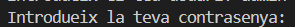
Si és tot correcte veurem el menú del programa. Si no és correcte, el programa avisarà que hem posat malament l'usuari o la contrasenya.
2. Manteniments
Confirmant que hem iniciat sessió amb l'usuari i contrasenya correctes ens sortirà aquest menú, des d'on podrem mirar i executar l'usuari tenint en compte els permisos que té.
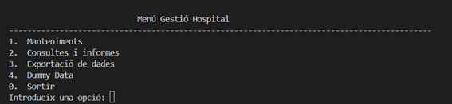
1.1 Obtenir dependència infermeria
Aquí podem posar el número del ID de la infermera i ens dirà si depèn d'una planta o d'un metge.
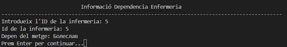
1.2 Informació del quiròfan
Aquí podem veure el dia, el pacient que s'operarà, en quin quiròfan i quins metges i infermeres estaran fent l'operació.
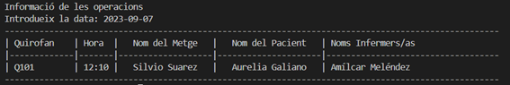
1.3 Informació de les visites i pacient
Podrem accedir a la informació de les visites que hi ha en aquell dia (hora, nom del metge i nom del pacient) o buscar la Informació completa d'un pacient (diagnòstics, receptes, etc.).
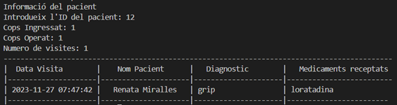
1.7 Crear un nou usuari / pacient
Aquí posem la informació del nou usuari com el DNI, contrasenya, i especialitat (metge, infermer/a o personal vari) i automàticament se'l registrarà a la base de dades PostgreSQL amb el rol adequat.
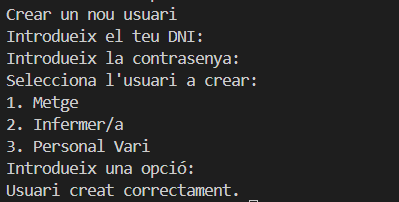
3. Consultes i Informes
Dins d'aquí podem aconseguir rànkings i consultes o informes que hi ha dins del nostre hospital.
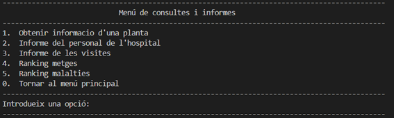
Rànking de metges i malalties
Aquí surten els rànkings dels metges amb més visites de tot l'hospital i també les malalties més freqüents registrades als diagnòstics.
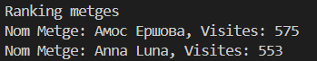
4. Exportació de dades (XML) i Dummy Data
Aquesta funció ens permet agafar dues dades, una data d'inici i una data de fi, i extreu tota la informació de les visites durant el rang de dies escollit. Les salva a un fitxer XML que s'exportarà a la ubicació que triem.
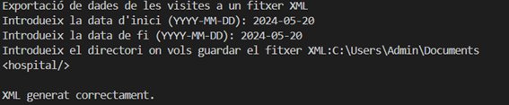
Dummy Data (Dades de prova)
Genera milers de dades "Fake" fent servir la llibreria Faker dins la base de dades per fer
proves de rendiment, comprovació d'errors o manteniment.
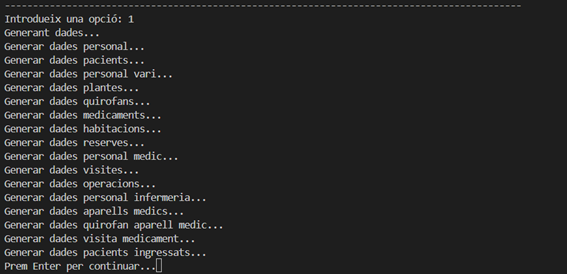
Llibreries i Requisits Tècnics
datetime: Per manipular dates i hores. Treballant amb visites i exportacions.random: Mòdul per funcions i operacions pseudoaleatòries.faker: Biblioteca que permet generar dades falses (noms, dates de naixement, adreces) per als registres pacients.psycopg2: Adaptador de bases de dades per interactuar de forma impecable amb PostgreSQL.etree/lxml: Per analitzar i crear els resultats d'exportacions massives com a dades XML.Fernet (cryptography): Eina de xifrat simètric per protegir la base de dades d'usuaris (contrasenyes i dades sensibles).